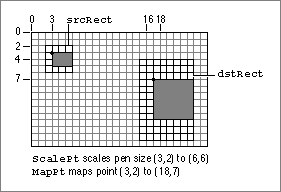

ScalePt
To scale a height and width according to the proportions of two rectangles, use theScalePtprocedure.PROCEDURE ScalePt (VAR pt:�Point; srcRect,dstRect:�Rect);
pt- On input, an initial height and width (specified in the two fields of a
Pointrecord) to scale; upon completion, vertical and horizontal scaling factors derived by multiplying the height and width by ratios of the height and width of the rectangle in thesrcRectparameter to the height and width of the rectangle in thedstRectparameter.srcRect- A rectangle. The ratio of this rectangle's height to the height of the rectangle in the
dstRectparameter provides the vertical scaling factor, and the ratio of this rectangle's width to the width of the rectangle in thedstRectparameter provides the horizontal scaling factor.dstRect- A rectangle compared to the rectangle in the
srcRectparameter to determine vertical and horizontal scaling factors.DESCRIPTION
TheScalePtprocedure produces horizontal and vertical scaling factors from the proportions of two rectangles. You can useScalePt, for example, to scale the dimensions of the graphics pen.You specify an initial height and width to scale in the
ptparameter. This parameter is of typePoint, although you don't pass coordinates in this parameter. Instead, you pass an initial height to scale in thev(or vertical) field of thePointrecord, and you pass an initial width to scale in theh(or horizontal) field.The
ScalePtprocedure scales these measurements by multiplying the initial height you specify in theptparameter by the ratio of the height of the rectangle you specify in thedstRectparameter to the height of the rectangle you specify in thesrcRectparameter, and by multiplying the initial width in theptparameter by the ratio of the width of thedstRectrectangle to the width of thesrcRectrectangle. TheScalePtprocedure returns the result in theptparameter.In Figure 3-23, where the width of the
dstRectrectangle is twice the width of thesrcRectrectangle, and its height is three times the height ofsrcRect,ScalePtscales the width of the graphics pen from 3 to 6 and scales its height from 2 to 6.SPECIAL CONSIDERATIONS
The minimum valueScalePtreturns is (1,1).Figure 3-23 Using
ScalePtandMapPt